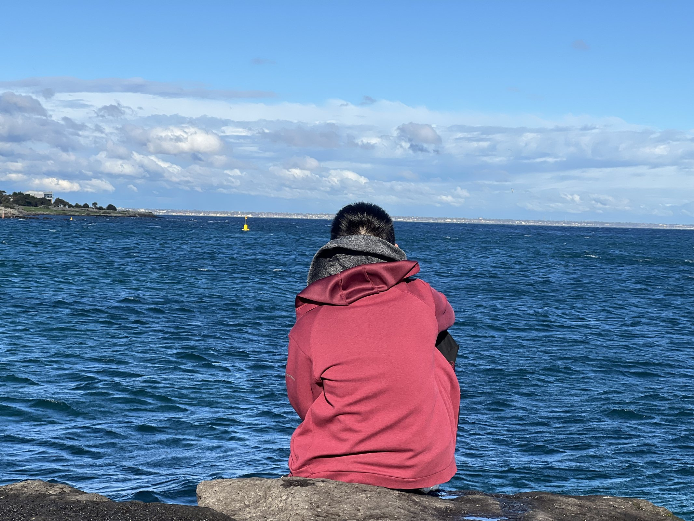
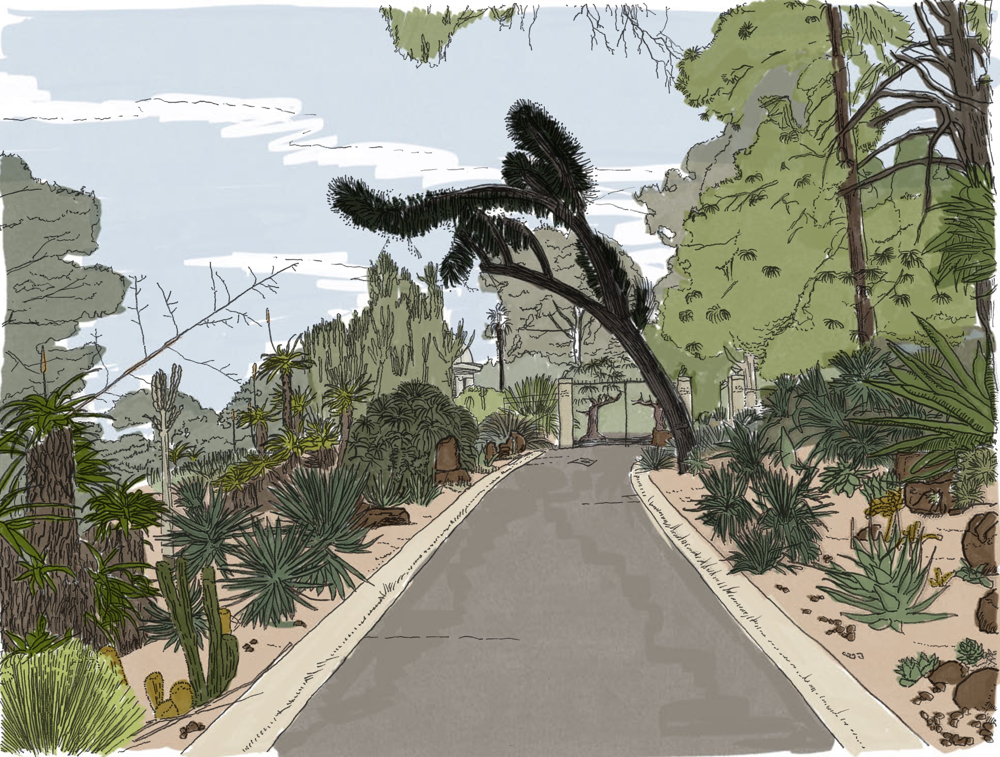
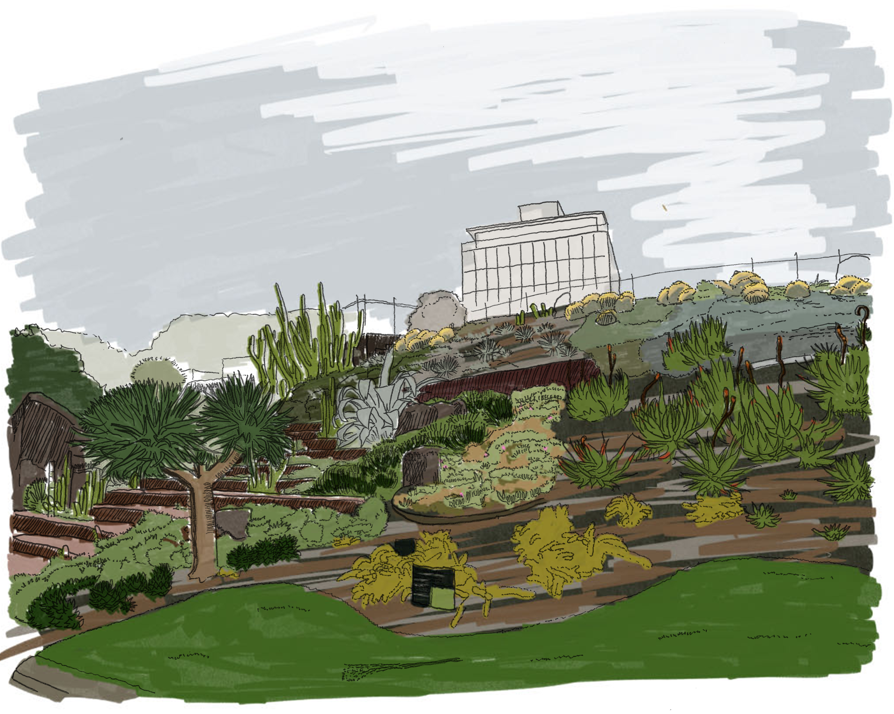

Landscape Designer / Melbourne
关注城市公共空间、生态系统、场地叙事与可持续城市设计。

Experience
Professional Timeline
Education
Selected Work
About
通过场地研究、公共空间策略、生态系统理解与图面表达，将学习阶段的 Studio 项目、手绘观察和作品集资料组织为可持续扩展的个人专业档案。
Drawing & Observation


Document
作为观察、尺度判断与空间记录能力的补充材料。
Documents
Contact